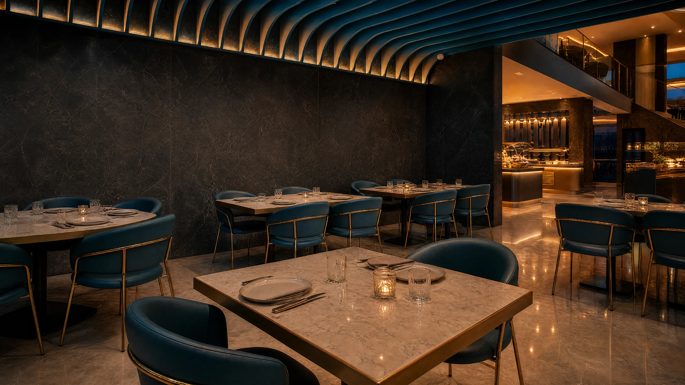
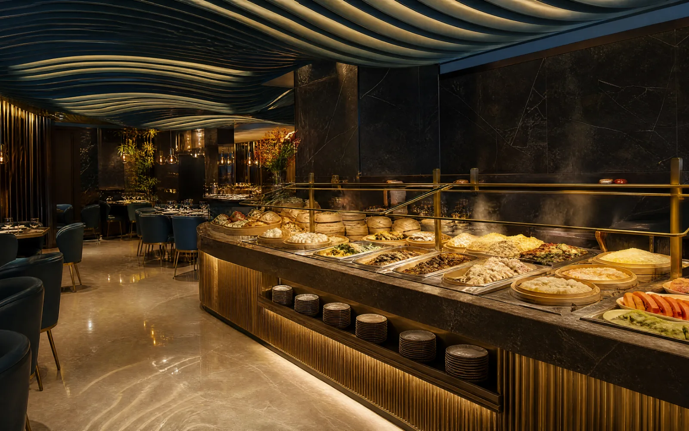
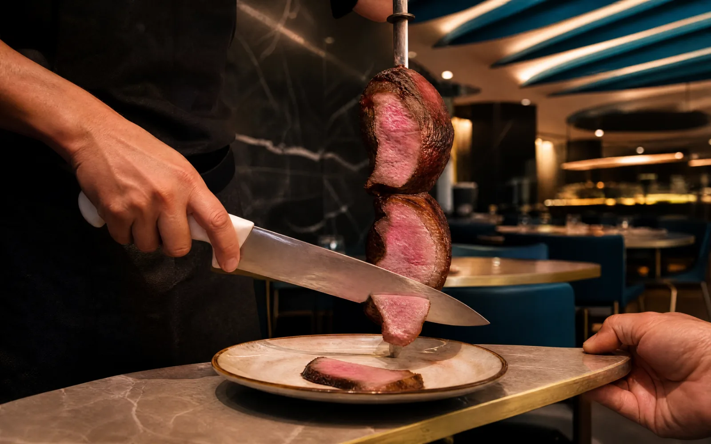
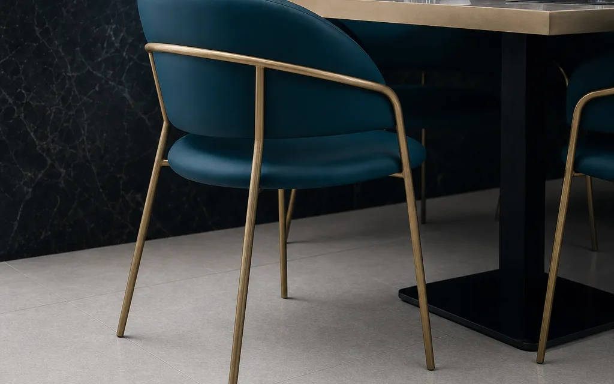
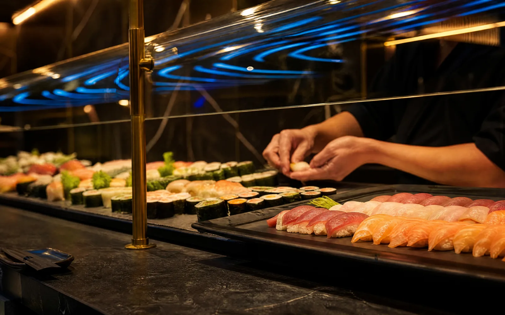
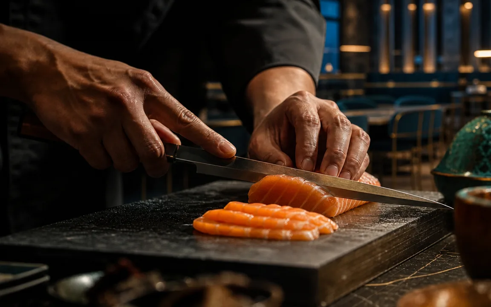

Tutto quello che volete, a un prezzo solo
Buffet: si va al banco e si prende quello che c'è, quante volte volete. E ogni tanto passiamo ai tavoli con qualcosa appena fatto.
Pranzo da 14,90 € Cena da 22,90 € bevande escluse Via Luigi Pirandello, 2r — Savona Tutti i giorni / 12:00–15:00 / 19:00–23:00 019 221 3138 Nuova apertura
Cosa si trova al banco
Come funziona
Ci si serve al banco, e ogni tanto arriviamo noi
È un buffet, non un ristorante alla carta: non si ordina e non si aspetta. Si prende un piatto, si gira il banco, si torna quante volte si vuole. Ogni tanto passiamo fra i tavoli con qualcosa appena uscito dalla cucina.
-
Vi sedete
Il tavolo è vostro. Non serve segnare niente e non serve aspettare nessuno.
-
Andate al banco
Prendete un piatto e girate: quello che vedete è quello che c'è, oggi.
-
Tornate quante volte volete
Nessun limite di giri e nessun supplemento. Il prezzo resta quello dell'inizio.
-
Ogni tanto passiamo noi
Carne girata alla brace, ananas, un dolce: cose che al banco non trovate.


Quanto dura: a cena il tavolo è vostro per tutta la serata, non facciamo doppio turno. A pranzo lo teniamo 90 minuti, così anche chi ha poco tempo trova posto.
Una sola regola: prendete quello che mangiate. Meglio tornare al banco tre volte che riempire il piatto una volta sola e lasciarlo lì.
Al banco
Cosa si trova, di solito
Il banco cambia: non tutti i giorni c'è tutto, e certe cose dipendono dal mercato. Queste però sono le parti fisse, ed è quello che la maggior parte delle sere trovate.
Sushi e tartare
Nigiri, uramaki e tartare preparati al banco durante il servizio.
Wok e vapore
Spaghetti di riso, ravioli al vapore e verdure saltate a fuoco vivo.
Brace e churrasco
Carne alla piastra e spiedini, tagliati al momento sul banco della brace.
Primi e mozzarella
La parte italiana della carta, per chi al tavolo non vuole rinunciarci.
Formule
Un prezzo deciso prima di sedervi
Il menu è sempre lo stesso: cambia solo il momento in cui venite. Bevande escluse, nessun costo nascosto, nessun supplemento sul numero di portate.
- Pranzo / da lunedì a venerdì
- 14,90 €a persona
- Cena / da lunedì a venerdì
- 22,90 €a persona
- Pranzo / sabato, domenica e festivi
- 18,90 €a persona
- Cena / sabato, domenica e festivi
- 24,90 €a persona
Nel prezzo c'è
- Tutto quello che c'è al banco, dagli antipasti ai dolci
- Giri illimitati, senza supplementi
- I dolci, compresi come tutto il resto
Si paga a parte
- Le bevande, che si ordinano al tavolo
- Il cibo preso e lasciato nel piatto
Bambini sotto i 120 cm: 9,90 € a pranzo e 12,90 € a cena, tutti i giorni.
Prenota un tavoloLa sala
Marmo scuro, onde blu, luce bassa
Le pareti sono lastre di marmo grigio scuro, il soffitto è attraversato da lamelle blu petrolio che ricordano il mare a due passi da qui, i tavoli sono in marmo chiaro con profili in ottone.
Luce calda e bassa, sedie imbottite, distanza vera fra i tavoli: si parla senza alzare la voce anche quando la sala è piena. Chi entra la prima volta di solito dice la stessa frase — non sembra un all you can eat.



Dove siamo e quando
Via Pirandello 2r, aperti sette giorni su sette
Aperti tutti i giorni / 12:00–15:00 e 19:00–23:00
- Pranzo, tutti i giorni12:00 – 15:00
- Cena, tutti i giorni19:00 – 23:00
- Giorno di chiusuranessuno
- Via Luigi Pirandello, 2r17100 Savona (SV)
- Telefono019 221 3138
- Solo servizio in salaNon facciamo consegne a domicilio né asporto.
Domande frequenti
Le risposte che ci chiedono al telefono
Serve prenotare anche in settimana?
A pranzo di solito si trova posto anche senza preavviso. Dal venerdì alla domenica la sala si riempie quasi sempre: meglio prenotare, soprattutto per tavoli da sei persone in su.
Quanto possiamo restare al tavolo?
A cena il tavolo è vostro per tutta la serata: non facciamo doppio turno. A pranzo lo teniamo per 90 minuti, così anche chi ha poco tempo trova posto.
Come funziona il prezzo per i bambini?
I bambini sotto i 120 cm pagano 9,90 € a pranzo e 12,90 € a cena, tutti i giorni. Seggioloni disponibili: basta segnalarlo nel modulo di prenotazione.
Gestite allergie e intolleranze?
Sì. Indicatele nelle note della prenotazione: prepariamo piatti senza glutine, senza crostacei e senza frutta a guscio in postazione separata. Per i celiaci vi chiediamo di avvisare almeno il giorno prima.
Si può festeggiare un compleanno?
Certo. Selezionate «Compleanno» nel modulo: portiamo il dolce con le candeline a fine cena. Per tavolate numerose prepariamo la sala riservata, fino a 40 persone con 48 ore di preavviso.
Come si paga?
Accettiamo carte di credito, bancomat e pagamenti da smartphone. I buoni pasto cartacei solo a pranzo, fino a due a persona.
C'è spazio per passeggini e sedie a rotelle?
Sì. L'ingresso è a livello strada, la sala è tutta al piano terra e i corridoi sono larghi. Segnalatecelo in prenotazione e vi assegniamo un tavolo vicino all'ingresso.
Fate consegne a domicilio o asporto?
No, né l'uno né l'altro. Il buffet funziona solo in sala: fuori dal locale non avrebbe senso.
Il tavolo si prenota, la cena si gusta